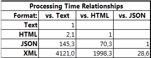
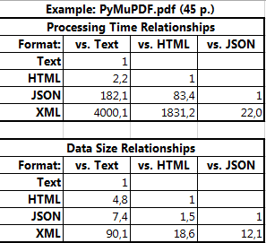
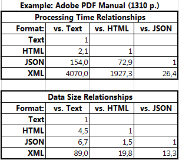

Appendix¶
This chapter contains additional comments and examples.
Example Outputs of Text Extraction Methods¶
Text information contained in a TextPage adheres to the following hierarchy:
<page> (width and height)
<block> (its rectangle)
<line> (its rectangle)
<span> (its rectangle and font information)
<char> (its rectangle, (x, y) coordinates and value)
A text page consists of blocks (= roughly paragraphs). A block consists of lines. A line consists of spans. A span consists of characters with the same properties. E.g. a different font will cause a new span.
TextPage.extractText()¶
This is the output of a page of this tutorial’s PDF version:
Tutorial
This tutorial will show you the use of MuPDF in Python step by step.
Because MuPDF supports not only PDF, but also XPS, OpenXPS and EPUB formats, so does PyMuPDF.
Nevertheless we will only talk about PDF files for the sake of brevity.
...
TextPage.extractHTML()¶
The HTML version looks like this:
<div class="page">
<div class="block"><p>
<div class="metaline"><div class="line"><div class="cell" style="width:0%;align:left"><span class="s0">Tutorial</span></div></div>
</div></p></div>
<div class="block"><p>
<div class="line"><div class="cell" style="width:0%;align:left"><span class="s1">This tutorial will show you the use of MuPDF in Python step by step.</span></div></div>
</div></p></div>
<div class="block"><p>
<div class="line"><div class="cell" style="width:0%;align:left"><span class="s1">Because MuPDF supports not only PDF, but also XPS, OpenXPS and EPUB formats, so does PyMuPDF.</span></div></div>
<div class="line"><div class="cell" style="width:0%;align:left"><span class="s1">Nevertheless we will only talk about PDF files for the sake of brevity.</span></div></div>
</div></p></div>
...
TextPage.extractJSON()¶
JSON output looks like so:
{
"len":35,"width":595.2756,"height":841.8898,
"blocks":[
{"type":"text","bbox":[40.01575, 53.730354, 98.68775, 76.08236],
"lines":[
{"bbox":[40.01575, 53.730354, 98.68775, 76.08236],
"spans":[
{"bbox":[40.01575, 53.730354, 98.68775, 76.08236],
"text":"Tutorial"
}
]
}
]
},
{"type":"text","bbox":[40.01575, 79.300354, 340.6957, 93.04035],
"lines":[
{"bbox":[40.01575, 79.300354, 340.6957, 93.04035],
"spans":[
{"bbox":[40.01575, 79.300354, 340.6957, 93.04035],
"text":"This tutorial will show you the use of MuPDF in Python step by step."
}
]
}
]
},
...
TextPage.extractXML()¶
Now the XML version:
<page width="595.2756" height="841.8898">
<block bbox="40.01575 53.730354 98.68775 76.08236">
<line bbox="40.01575 53.730354 98.68775 76.08236">
<span bbox="40.01575 53.730354 98.68775 76.08236" font="Helvetica-Bold" size="16">
<char bbox="40.01575 53.730354 49.79175 76.08236" x="40.01575" y="70.85036" c="T"/>
<char bbox="49.79175 53.730354 59.56775 76.08236" x="49.79175" y="70.85036" c="u"/>
<char bbox="59.56775 53.730354 64.89575 76.08236" x="59.56775" y="70.85036" c="t"/>
<char bbox="64.89575 53.730354 74.67175 76.08236" x="64.89575" y="70.85036" c="o"/>
<char bbox="74.67175 53.730354 80.89575 76.08236" x="74.67175" y="70.85036" c="r"/>
<char bbox="80.89575 53.730354 85.34375 76.08236" x="80.89575" y="70.85036" c="i"/>
<char bbox="85.34375 53.730354 94.23975 76.08236" x="85.34375" y="70.85036" c="a"/>
<char bbox="94.23975 53.730354 98.68775 76.08236" x="94.23975" y="70.85036" c="l"/>
</span>
</line>
</block>
<block bbox="40.01575 79.300354 340.6957 93.04035">
<line bbox="40.01575 79.300354 340.6957 93.04035">
<span bbox="40.01575 79.300354 340.6957 93.04035" font="Helvetica" size="10">
<char bbox="40.01575 79.300354 46.12575 93.04035" x="40.01575" y="90.050354" c="T"/>
<char bbox="46.12575 79.300354 51.685753 93.04035" x="46.12575" y="90.050354" c="h"/>
<char bbox="51.685753 79.300354 53.90575 93.04035" x="51.685753" y="90.050354" c="i"/>
<char bbox="53.90575 79.300354 58.90575 93.04035" x="53.90575" y="90.050354" c="s"/>
<char bbox="58.90575 79.300354 61.685753 93.04035" x="58.90575" y="90.050354" c=" "/>
<char bbox="61.685753 79.300354 64.46575 93.04035" x="61.685753" y="90.050354" c="t"/>
<char bbox="64.46575 79.300354 70.02576 93.04035" x="64.46575" y="90.050354" c="u"/>
<char bbox="70.02576 79.300354 72.805756 93.04035" x="70.02576" y="90.050354" c="t"/>
<char bbox="72.805756 79.300354 78.36575 93.04035" x="72.805756" y="90.050354" c="o"/>
<char bbox="78.36575 79.300354 81.695755 93.04035" x="78.36575" y="90.050354" c="r"/>
<char bbox="81.695755 79.300354 83.91576 93.04035" x="81.695755" y="90.050354" c="i"/>
...
Resource Requirements of Text Extraction Methods¶
The four text extraction methods of a TextPage differ significantly, not only in terms of information they supply (see above). More information of course means that more processing is required and a higher data volume is generated.
For testing performance, we have run 10 examples PDFs through these methods and found the following information. The following data is of course not statistically secured in any way - just take it as an idea for what you should expect to see.
As a low end example we took this manual’s PDF version (45+ pages, text oriented, 500 KB). The high end case was Adobe’s PDF manual (1310 pages, completely text based, 32 MB). The other eight test cases were Spektrum magazines January to August 2015 (the German version of Scientific American, 100+ pages, text with lots of interspersed images, 10 to 25 MB each).
Performance¶
Processing times of the extract methods roughly seem to follow this pattern, extractText(basic=True) being set to 1:
(Text : HTML : JSON : XML) ~ (1 : 2 : 145 : 4120)
On a higher level Win7 machine (8 processors at 4 GHz, 8 GB RAM), the figure 4120 for extractXML() corresponds to anything between 0.2 and 0.5 seconds per page. This still means that you can extract XML text information of a complex 100-page magazine in less than a minute. This is about 3 times faster than text extraction with other free PDF utilities, e.g. Nitro 3.
If you use PDF2Text.py from the examples library (a utility which converts PDFs into text files), you will see a performance based on extractXML().
In the same directory you will also find a similar utility which is based on extractJSON(). This one is more than 20 times faster than extractTest(basic=False) (and thus 60+ times faster than Nitro)!
These are the details of our findings:
Data Sizes¶
The sizes of the returned text strings follow this pattern, again extractText(basic=True) is set to 1:
(Text : HTML : JSON : XML) ~ (1 : 4 : 6 : 87)
The number 87 for extractXML() corresponds to values between 200 and 400 KB per page. The details can be seen here:
Examples “PyMuPDF.pdf” and “Adobe PDF Reference 1-7.pdf”¶
Our low and high end examples (contained in the numbers of the previous chapter) have the following detail data.
 